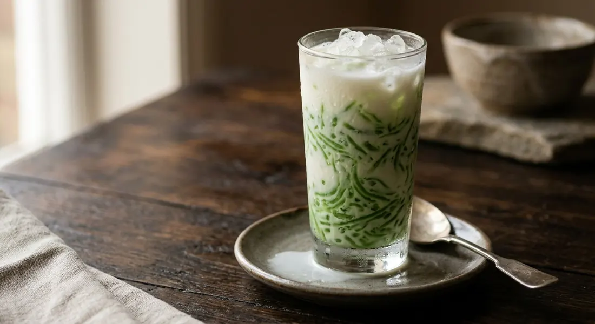

Mung bean flour cooked to a glossy paste and pressed through a sarim press into ice water — tiny green threads drowned in sweet coconut cream over crushed ice.

ซ่าหริ่ม — also written สลิ่ม (salim) — is one of the oldest sweets in the Thai repertoire. Mkunigroup's food historians note the record is not precise, but Ayutthaya knew the dish by the late period of the old capital, and some sources put it among the sweets credited to ท้าวทองกีบม้า — Marie Guimar, the Portuguese-Japanese confectioner at the Ayutthaya court known as the queen of Thai desserts, creator of thong yip and thong yod.
The dessert is, at its core, two things: threads and cream. The threads are made from แป้งถั่วเขียว, dehulled mung bean flour — nothing else binds them — stirred over heat with jasmine-flower water (and pandan for the classic green) until the paste turns clear, then pressed through a ที่กดซ่าหริ่ม, a hand press with fine holes, into a bowl of ice-cold water. The cold sets each strand instantly. Wongnai's home cook Nickktwf puts the difference from its famous cousin plainly: the method is lod chong's, but the flour and the press are not — sarim's threads are finer, shorter and silkier.
The cream is sweetened coconut cream, and the finishing touch of the old recipes is อบควันเทียน — a jasmine-scented candle burned inside the covered pot until the smoke perfumes the syrup. Phol Food Mafia and TrueID both smoke theirs; Krua.co treats it as optional polish. Either way, the last ingredient is non-negotiable: crushed ice. Sarim is a hot-weather sweet, eaten cold, and the ice is part of the recipe, not the garnish.
| Thai | English | Amount |
|---|---|---|
| แป้งถั่วเขียว | Mung bean flour (dehulled) | 1 cup |
| น้ำใบเตย | Pandan water (leaves blended with water, strained) | 4 cups |
| น้ำลอยดอกมะลิ | Jasmine flower water (for the syrup) | 1 cup |
| น้ำตาลทราย | White sugar | 1 cup |
| หัวกะทิ | Coconut cream | 1 cup |
| เกลือสมุทร | Sea salt | ½ tsp |
| น้ำแข็งทุบ | Crushed ice | to serve |
| เทียนอบ | Jasmine-scented candle (optional, for smoking the syrup) | 1 |
The three-colour set (Kapook): the same paste made three times — green with pandan water, pink with rose syrup or pink colouring in jasmine water, white with plain jasmine water — served together in one cup. The natural-colour set (TrueID): pandan green, butterfly pea blue and bougainvillea pink, each 550 g of boiled-and-strained flower water to 60 g of flour, with ¼ teaspoon of jasmine essence — no artificial colour at all. The no-frills pot (Wongnai): flour and jasmine water at a stiff 1 : 2.5 ratio with food colouring, stirred on a high flame until clear — the quickest version, and the one that proves the dish.
The paste ratio. Wongnai stirs a stiff paste at 1 part flour to 2.5 parts water. Phol and Kapook use 1 : 4. Krua goes 1 : 4.5. TrueID's natural-colour version is a thin 1 : 9. The wetter the mix, the longer the stir — what they all agree on is the end point: the paste must go translucent and hold a shape in cold water before it goes anywhere near the press.
The colour. Phol makes pandan green alone. Krua makes green and pink. Kapook sets out the full three-colour cup — green, pink and white. TrueID insists on natural colouring only, boiling pandan, butterfly pea and bougainvillea for the three shades. Wongnai just reaches for the food colouring bottle. The threads are the same; the palette is a matter of taste.
The candle. Phol and TrueID smoke the syrup with a scented candle as a standard step. Krua lists it as an optional refinement. Kapook and Wongnai do not mention it at all. The smoked syrup tastes faintly of jasmine wax; the unsmoked one is a cleaner coconut and sugar.
The syrup balance. Phol uses two cups of sugar to one of coconut cream and no salt. Krua uses one to one with half a teaspoon of sea salt. Kapook goes two cups of sugar to two of coconut milk with a pinch of salt, and TrueID only 120 g of sugar to 500 g of cream. Every version lands somewhere different on the sweet-cream scale — make it once and adjust to your own tooth.
The heat. Phol stirs on a low flame, Krua and Kapook on medium, and Wongnai on high. Low and slow gives the most even paste; high asks for constant, vigorous stirring. All three arrive at the same clear, glossy mass.
This recipe is translated from the following Thai-language sources. Where they disagree, we've said so.
1. Krua.co — "ซาหริ่ม" by อบเฉย อิ่มสบาย (the professional two-colour method and technique notes; the recipe this page follows) — krua.co
2. Phol Food Mafia — "Salim (ซ่าหริ่มใบเตย)" by พล ตัณฑเสถียร (the pandan version and the candle-smoked syrup) — pholfoodmafia.com
3. Kapook Cooking — "ซ่าหริ่ม สูตรขนมไทยหลากสี พร้อมวิธีทำเส้นซาหริ่ม กับ น้ำเชื่อมกะทิ" (the three-colour cup and the one-direction stir) — cooking.kapook.com
4. TrueID Food — "แจกสูตร ซาหริ่ม น้ำกะทิมะพร้าวอ่อน น้ำแข็งใสคลายร้อน ทำง่ายด้วยสีธรรมชาติ!" by Maysylvie (natural colours and young coconut) — food.trueid.net
5. Wongnai Cooking — "สูตร ซาหริ่ม" by Nickktwf (the no-frills home version) — wongnai.com
6. Mkunigroup — "ซ่าหริ่ม ขนมไทยเส้น อร่อยไม่เหมือนใคร" (the history: Ayutthaya origins and the ท้าวทองกีบม้า tradition) — mkunigroup.com